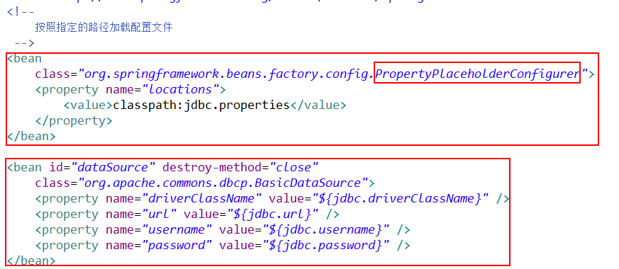

spring使用sun公司制定的DataSourse接口，具体的实现类，可以为DBCP或者C3P0等源数据源，但是，spring，就是面向接口编程，因此，具体的实现类，不用关心：
具体操作过程：


应用：采用模板模式（固定的流程+可变的参数），与数据库连接。
JdbcTemplate类，就是spring提供的那个模板类，程序员只要指定数据源，就可以使用jdbc的那些规则，执行sql语句了，类似（参见模式设计笔记本中的那个模板模式讲解）的那个自定义模板类。我们只要继承，就可以使用模板类中的方法。


总结上述各个抽象类，接口什么的，最终目的：

应用的例子：


具体操作过程：
（1）配置xml文件

（2）
配置好了，程序员就可以获得数据源了，不必关心具体的第三方数据源提供者：想·
配置文件如下：
配置好，代码中就可以直接使用数据源了。而不用自己写数据源。这个，就是spring的IOC，程序员完全就是面向接口编程。
上图标明，在使用数据源的时候，就使用dataSourse这个代号就行，就能够获得DBCP/或者C3P0提供的数据源。
应用：采用模板模式（固定的流程+可变的参数），与数据库连接。
也就是说，spring写好了模板，我们只要传递给这个模板一个数据源（通过配置文件，进行DI），然后继承该模板，就可以获得模板中的关于数据库操作的CRUD方法。
注：在模板中，会自己在数据源中，获取连接。我们不用关注这个东西。
JdbcTemplate类，就是spring提供的那个模板类，程序员只要指定数据源，就可以使用jdbc的那些规则，执行sql语句了，类似（参见模式设计笔记本中的那个模板模式讲解）的那个自定义模板类。我们只要继承，就可以使用模板类中的方法。
首先定义一个抽象类：JdbcAccessor
然后，JdbcTemplate类继承上述类：
父类保证该模板可以继承有数据源，接口保证该模板可以执行的各种CRUD操作。
该模板中，我了解的方法有：
该模板类的继承实现体系，将应该具有的数据源的操作，与应该具有的CRUD操作，分开继承，一个是抽象类，用于数据源的继承，一个是接口，通过实现该接口，使得该类具有通过JDBC操作数据的各种crud操作，挺好。不会乱。（理解）
谈到该模板类，就必须了解另外一个类：
这个类的私有成员变量，就是模板类，因此，也是相互联系的。
总结上述各个抽象类，接口什么的，最终目的：
应用的例子：
案例一：
JdbcAccessor中有dataSource
案例二：
案例三：
案例四：
这样弄，更加复杂，作为了解即可。
案例五：
或：
案例六：
哈哈，各种注入，就是给一个数据源。这个就是模板，接收到数据源之后，其他类继承数据源，然后就可以调用数据源的crud方法了。